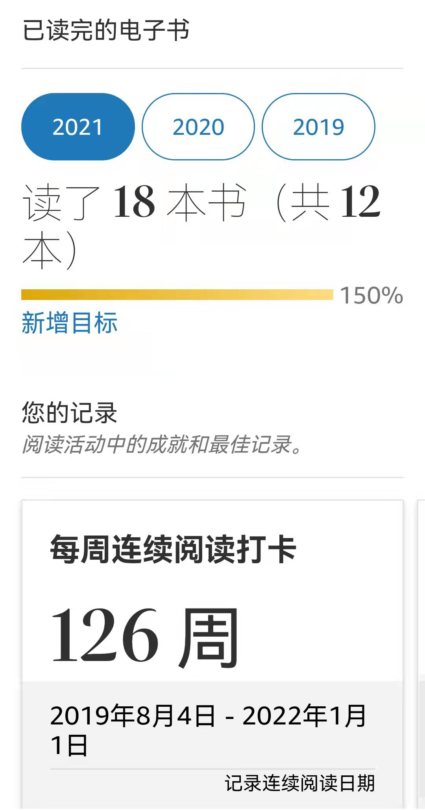

转眼一年又要结束了，对2021年做个小结吧。
2021年是中国共产党成立100周年，中国共产党带领中华民族走上了实现伟大复兴的壮阔道路，这100年来为中国，为世界都做出了很大的贡献。2021年，我国脱贫攻坚战取得了全面胜利；航天技术飞速发展，“天问一号”火星探测器携“祝融号”火星车成功着陆火星、神舟十三号载人飞船发射取得圆满成功；中老铁路顺利通车，将进一步加强中国在东南亚的影响力，促进与东南亚国家的贸易往来……
就疫情来说，2021年比2020处境要好一些。面对后疫情时代，仍面临挑战，变异株德尔塔、奥密克戎等肆虐，新冠导致的死亡人数累计500多万，这将在世界历史上留下浓重的一笔。
国际上，美国军队撤出阿富汗，塔利班接管阿富汗政权，还有缅甸政变。某些国家对中国依旧虎视眈眈，恶意挑起各种事端，比如新疆棉花事件、台湾问题、中印边境问题等等。
由于疫情影响，全球供应链出现危机，特别是芯片短缺，影响了多个行业，比如汽车行业出现了不同程度的减产，另外疫情也导致航运成本居高不下。
相比2020年，中国经济快速复苏，1到11月，进出口总值同比增长21.1%。国家通过各种政策推动国民消费，促进消费升级，加强经济内循环。中国人民银行稳步推进数字人民币，在多个城市试点。“碳中和”、“元宇宙”两大主题成为今年金融市场的大热门。2021年被称作“碳中和”元年，“碳中和”创造出了大量投资机会。“元宇宙”也成了下半年的投资热点，9月6日，中青宝在其官方公众号上发布《元宇宙赛道崛起 网游老兵砥砺奋进踏征程》一文后，元宇宙话题持续发酵，9月6日到10月25日之间，中青宝股价从8.28元/股，涨至22.88元/股高位，涨幅超过170%。10月，Facebook宣布更名为meta，国内企业百度、腾讯、华为等企业也开始布局元宇宙相关产业。12月23日，中纪委网站更是发文《深度关注 | 元宇宙如何改写人类社会生活》力挺元宇宙。互联网的普及，“宅经济”快速发展，以及VR/AR硬件，数字孪生、人工智能、云计算等技术发展为元宇宙的发展创造了条件。元宇宙在游戏、社交、电商、零售、工业等产业都有不错的应用前景。虽然现在相关技术还不是很成熟，我相信元宇宙将会是下一代互联网的发展目标。
另外政府对教育、互联网龙头进行监管。“双减”政策使相关中概股市值重挫。新东方年内下跌89％，好未来下跌94％，高途集团跌96％。国家对互联网龙头公司进行反垄断调查，蚂蚁集团被终止上市，美团被罚款，等等；我国关于数据安全的首部律法《中华人民共和国数据安全法》于2021年9月1日起正式施行，不少境外上市公司开始积极响应，12月3日，滴滴出行宣布将在纽交所退市，并准备回香港上市。
国家对文艺界也进行正本清源，整治娱乐圈，限制演员天价收入、封禁和惩处不良演员。查处偷税漏税，文化产业又引来一次税务风暴。比如郑爽、薇娅等人因税务问题被罚款。
2021年也是不平静的一年，就写这些了。对于我个人来说，工作上还是取得了很大的进步。今年投资理财的收益非常不理想，投资的基金中，半导体和新能源得到了不错的收益，股票收益非常惨淡，踩雷了郑爽事件相关公司股票（我的关于商誉的笔记介绍了这个事件）。此外，在股票买卖上也操作失误，真正体验到了作为韭菜的辛酸，还是基金稳妥啊。2022年要改变投资策略了，做到及时止盈止损，但这又谈何容易呢？呜呼！
今年完成了阅读目标，整理发布了8篇读书笔记。

养成了阅读的习惯，每周坚持输出文章、整理笔记。目前感觉还是不错的，逐渐构建自己的知识框架。在阅读、整理笔记时发现自己所知甚少，越来越发现自己的无知。无论是认识自己，还是认识我们这个世界，都很难。唯有不断学习，不断实践才能更好的认识自己，才能看到更美丽的风景。
借这个机会聊聊我的写作初衷吧。我写的文章大多是技术性文章，加上文笔不佳，可能阅读体验不是很好，望各位海涵。我的动力来源于我希望构建我自己的知识框架，而把它发布出来的原因在于，一是我认为我的文章可能会帮助到一部分人，所谓：舍与，即在耕耘无量福田；二来，每写完一篇文章并公布到网络上，我感受到了快乐，是分享的喜悦吧！
如果对我的文章内容有疑问或者觉得有不对的地方，欢迎交流讨论。在如此浩瀚的信息海洋中看到我的文章，这是缘分。你阅读这些文字时，接收到了我写文章时思考的信息，从某种程度上说，我们大脑中的原子之间进行了交流。说的有点玄乎了，总之，在充满如此多噪音的信息世界中，你能遇到我这个“噪音”，真是缘分。
最后，预祝元旦快乐！喜迎2022的到来！
本文标题:2021年
文章作者:hiyo
文章链接:https://hiyongz.github.io/posts/my-2021-annual-summary/
许可协议:本博客文章除特别声明外，均采用CC BY-NC-ND 4.0 许可协议。转载请保留原文链接及作者。